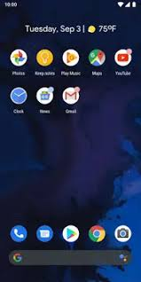
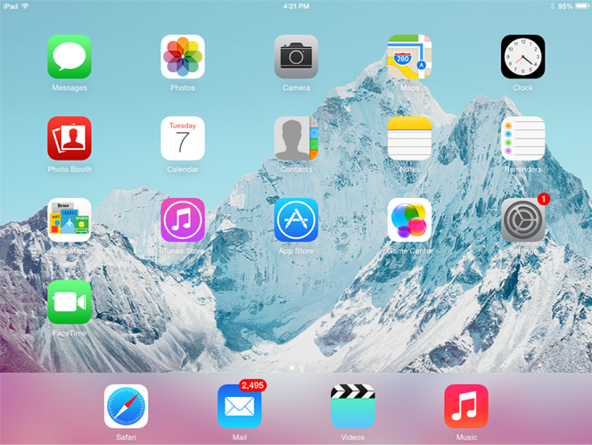
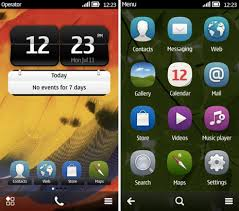
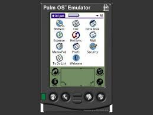
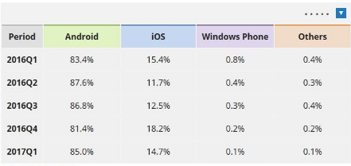

The operating systems we've been talking about so far were designed to run on desktop and laptop computers. Mobile devices such as phones, tablet computers, and MP3 players are different from desktop and laptop computers, so they run operating systems that are designed specifically for mobile devices. Examples of mobile operating systems include Apple iOS and Google Android. Operating systems for mobile devices generally aren't as fully featured as those made for desktop and laptop computers and they aren't able to run all of the same software. However, you can still do a lot of things with them, like watch movies, browse the Web, manage your calendar, and play games. The first smartphone was designed by IBM and sold by BellSouth (formerly part of the AT&T Corporation) in 1993. It included a touchscreen interface for accessing its calendar, address book, calculator, and other functions. As the market matured and solid-state computer memory and integrated circuits became less expensive over the following decade, smartphones became more computer-like, and more more-advanced services, such as Internet access, became possible. Advanced services became ubiquitous with the introduction of the so-called third-generation (3G) mobile phone networks in 2001. Before 3G, most mobile phones could send and receive data at a rate sufficient for telephone calls and text messages. Using 3G, communication takes place at bit-rates high enough for sending and receiving photographs, video clips, music files, e-mails, and more. Most smartphone manufacturers license an operating system, such as Microsoft Corporation’s Windows Mobile OS, Symbian OS, Google’s Android OS, or Palm OS. Research in Motion’s BlackBerry and Apple Inc.’s iPhone have their own proprietary systems. and the most known operating systems are the follows : 1. Android OS (Google Inc.) The Android mobile operating system is Google's open and free software stack that includes an operating system, middleware and also key applications for use on mobile devices, including smartphones. Updates for the open source Android mobile operating system have been developed under "dessert-inspired" version names (Cupcake, Donut, Eclair, Gingerbread, Honeycomb, Ice Cream Sandwich , kitkat , jellybean , marshmellow , oreo and nougat ) with each new version arriving in alphabetical order with new enhancements and improvements.  2. Bada (Samsung Electronics) Bada is a proprietary Samsung mobile OS that was first launched in 2010. The Samsung Wave was the first smartphone to use this mobile OS. Bada provides mobile features such as multipoint-touch, 3D graphics and of course, application downloads and installation. 3. BlackBerry OS (Research In Motion) The BlackBerry OS is a proprietary mobile operating system developed by Research In Motion for use on the company’s popular BlackBerry handheld devices. The BlackBerry platform is popular with corporate users as it offers synchronization with Microsoft Exchange, Lotus Domino, Novell GroupWise email and other business software, when used with the BlackBerry Enterprise Server. 4. iPhone OS / iOS (Apple) Apple's iPhone OS was originally developed for use on its iPhone devices. Now, the mobile operating system is referred to as iOS and is supported on a number of Apple devices including the iPhone, iPad, iPad 2 and iPod Touch. The iOS mobile operating system is available only on Apple's own manufactured devices as the company does not license the OS for third-party hardware. Apple iOS is derived from Apple's Mac OS X operating system.  5. MeeGo OS (Nokia and Intel) A joint open source mobile operating system which is the result of merging two products based on open source technologies: Maemo (Nokia) and Moblin (Intel). MeeGo is a mobile OS designed to work on a number of devices including smartphones, netbooks, tablets, in-vehicle information systems and various devices using Intel Atom and ARMv7 architectures. 6. Palm OS (Garnet OS) The Palm OS is a proprietary mobile operating system (PDA operating system) that was originally released in 1996 on the Pilot 1000 handheld. Newer versions of the Palm OS have added support for expansion ports, new processors, external memory cards, improved security and support for ARM processors and smartphones. Palm OS 5 was extended to provide support for a broad range of screen resolutions, wireless connections and enhanced multimedia capabilities and is called Garnet OS. 7. Symbian OS (Nokia) Symbian is a mobile operating system (OS) targeted at mobile phones that offers a high-level of integration with communication and personal information management (PIM) functionality. Symbian OS combines middleware with wireless communications through an integrated mailbox and the integration of Java and PIM functionality (agenda and contacts). Nokia has made the Symbian platform available under an alternative, open and direct model, to work with some OEMs and the small community of platform development collaborators. Nokia does not maintain Symbian as an open source development project.  8. webOS (Palm/HP) WebOS is a mobile operating system that runs on the Linux kernel. WebOS was initially developed by Palm as the successor to its Palm OS mobile operating system. It is a proprietary Mobile OS which was eventually acquired by HP and now referred to as webOS (lower-case w) in HP literature. HP uses webOS in a number of devices including several smartphones and HP TouchPads. HP has pushed its webOS into the enterprise mobile market by focusing on improving security features and management with the release of webOS 3.x. HP has also announced plans for a version of webOS to run within the Microsoft Windows operating system and to be installed on all HP desktop and notebook computers in 2012.  9. Windows Mobile (Windows Phone) Windows Mobile is Microsoft's mobile operating system used in smartphones and mobile devices – with or without touchscreens. The Mobile OS is based on the Windows CE 5.2 kernel. In 2010 Microsoft announced a new smartphone platform called Windows Phone 7.
